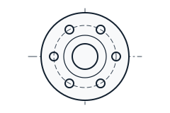
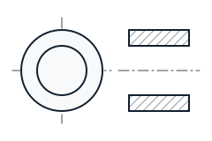
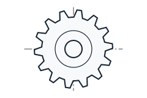
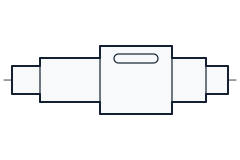
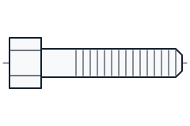

What we make and how we make it
We manufacture replacement parts for industrial machinery, in single pieces or in batches.

Parts made to your drawing
Send a drawing with dimensions, tolerances and material. We confirm we can make it, quote the price, and make a first piece for you to check before the full batch.
- Drawings as PDF, DWG or DXF
- Single pieces and repeat batches
- Material certificates on request

Parts copied from a worn sample
No drawing? Post us the old part. We measure it, work out the original size and material, and make a replacement that fits.
- Useful for older machines with no spare parts supply
- We send you the drawing we make, for your approval
- Your sample is returned if you ask

Gears and sprockets
Spur gears and chain sprockets cut to your module, number of teeth, bore and keyway.
- Hardened and tempered on request
- Finished bore and keyway to fit your shaft

Shafts and splines
Plain, stepped, keyed and splined shafts, turned and ground to size.
- Straightness and run-out checked before dispatch
- Threads, keyways and splines cut to your drawing

Studs, bolts and special fasteners
Non-standard fasteners that are hard to buy in small quantities: long studs, special threads and made-to-length bolts.
Materials and processes
If the material or process you need is not listed, ask. We will tell you if we can do it or who we trust to do it.
| Area | What we do |
|---|---|
| Materials | Carbon and alloy steels (such as EN8, EN24), stainless steel (304, 316), cast iron, bronze, brass, aluminium |
| Machining | CNC and conventional turning, milling, drilling, boring, gear cutting, keyway and spline cutting |
| Heat treatment | Hardening and tempering, case hardening |
| Finishing | Grinding, polishing, black oxide, plating and painting on request |
| Inspection | Vernier calipers, micrometers, bore gauges, thread gauges, hardness testing. Inspection report on request. |
| Packing and dispatch | Rust-protected, export-packed in cartons or wooden cases. Commercial invoice, packing list and other shipping documents prepared for you. |
Have a part that needs replacing?
Send us the drawing, or post us the worn part. We will tell you what it will take to make it.